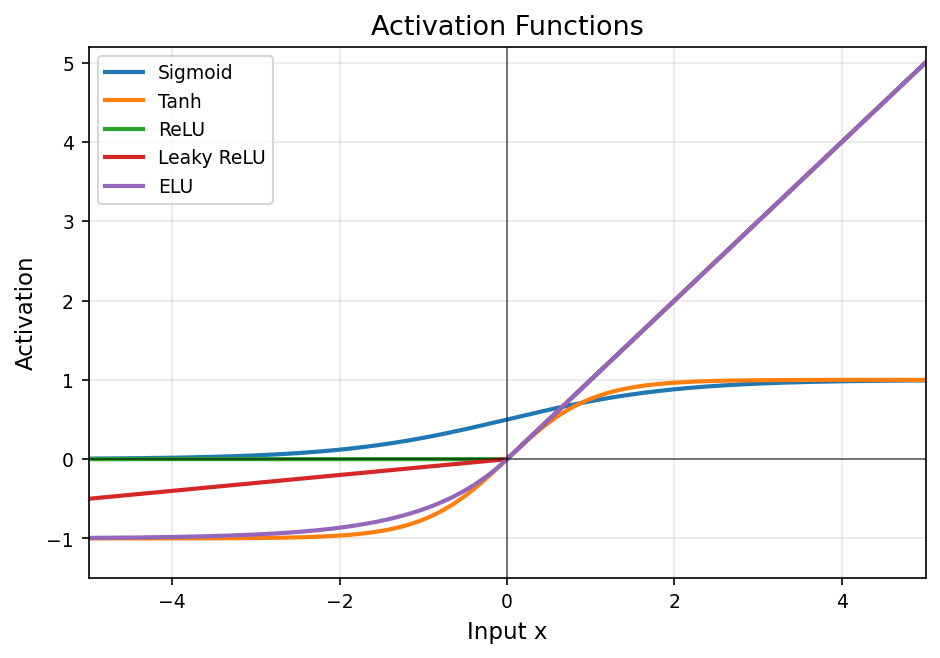
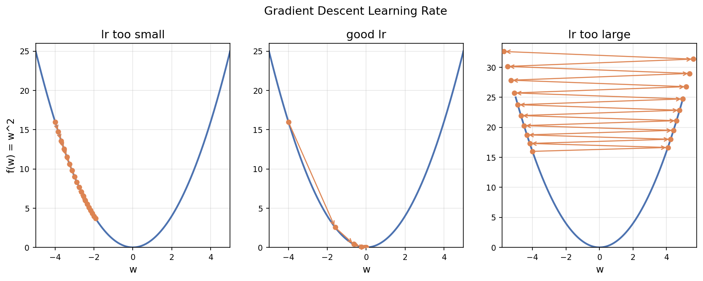

深度學習訓練基礎：為什麼深的網路以前訓練不起來？¶
難度：中。需要知道梯度下降（見〈ML 核心觀念〉§3）和一點微積分的連鎖律。 本頁的實驗只用 numpy，數字來自 Python 3.12、亂數種子 0，2026-10-04 執行。
前言¶
神經網路的教材通常一個零件一個零件介紹：激活函數有哪些、損失函數有哪些、優化器有哪些。每個零件都有一張比較表，但很少有人說清楚為什麼需要這麼多零件。
答案其實集中在一件事上：網路一變深，梯度就傳不回去。ReLU、好的初始化、BatchNorm、殘差連接，大半都是為了這件事發明的。
本頁把零件串成一條訓練迴路：前向傳播算輸出 → 損失函數量誤差 → 反向傳播算梯度 → 優化器更新權重，並回答三個問題：
- 為什麼深的網路以前訓練不起來？（先講結論：反向傳播時梯度一層一層連乘。用 sigmoid 疊 20 層，梯度傳回第 1 層時只剩最後一層的 10⁻¹²，前面的層等於完全沒在學。換成 ReLU 加 He 初始化，第 1 層和最後一層的梯度維持在同一個量級。）
- 初始化為什麼這麼重要？（同樣是 ReLU，權重初始化太小，第 1 層的梯度掉到 10⁻²²。He 初始化讓每一層輸出的變異數保持不變，梯度才傳得回去。）
- Dropout 和 BatchNorm 為什麼訓練和推論時做的事不一樣？（兩者在訓練時都依賴「這一批」的隨機性或統計量，推論時沒有批次也不該有隨機性，所以要換一套固定的算法，讓輸出的期望值一致。）
本頁只談全連接網路和 CNN 入門；Transformer 見〈Transformer 與注意力機制〉。
1. 激活函數（Activation）¶
激活函數是非線性的來源。沒有它，疊再多層線性層，乘起來還是一層線性。
| 函數 | 範圍 | 特點 / 問題 |
|---|---|---|
| Sigmoid | (0,1) | 輸出像機率；兩端飽和 → 梯度消失；非零中心 |
| Tanh | (−1,1) | 零中心、收斂比 sigmoid 好；仍會飽和 |
| ReLU | [0,∞) | 計算快、正區梯度恆為 1；Dead ReLU（負區恆為 0 → 神經元可能永遠不再更新） |
| Leaky ReLU | ℝ | 負區給一個小斜率 max(ax,x)，緩解 dead ReLU |
| ELU | ℝ | 負區平滑、輸出接近零中心；計算較貴 |
| PReLU | ℝ | Leaky 的可學版本（斜率 α 由訓練決定） |
| Softmax | (0,1) 且總和為 1 | 多分類輸出層用，輸出各類機率 |


選用原則：隱藏層預設 ReLU（有問題再試 Leaky/ELU）；輸出層看任務：二元分類 Sigmoid、多元分類 Softmax、回歸不加激活。
Sigmoid 的導數最大只有 0.25（在 0 的位置），兩端趨近 0。每經過一層就至少乘上 0.25，這是第 4 節實驗裡梯度消失的直接原因。
2. 損失函數（Loss）¶
損失函數量化「預測和真值差多遠」，訓練就是把它變小。
- 回歸：MSE（重罰大誤差、最常用）、MAE（對離群值穩健）。
- 分類：Cross-Entropy。Keras 裡分成
binary_crossentropy（二元）、categorical_crossentropy（多元，label 是 one-hot）、sparse_categorical_crossentropy（多元，label 是整數）。後兩者數學上一樣，只差 label 的格式。 - Hinge Loss：
max(0, 1 − y·ŷ)，SVM 用的損失，只懲罰落在 margin 內或錯邊的點。 - 自訂 Loss：依商業成本設計。例如備貨問題「賣不掉的成本 ≠ 缺貨的損失」，就用不對稱的損失。
常見誤解：分類問題用 MSE 也能訓練
能跑，但配 sigmoid 或 softmax 時，MSE 的梯度會乘上 sigmoid 的導數；輸出一飽和，梯度就接近 0，模型錯得很離譜時反而學最慢。 Cross-Entropy 的梯度剛好把 sigmoid 的導數消掉，變成「預測 − 真值」。錯越多、梯度越大。這是收斂速度的差別，不是慣例。
3. 優化器（Optimizer）¶
更新規則 w ← w − η·∇L(w)（η 是 learning rate）。基本的 Batch／SGD／Mini-batch 見〈ML 核心觀念〉§3，這裡看自適應優化器。
| 優化器 | 核心 | 重點 |
|---|---|---|
| SGD + Momentum | 累積過去的梯度方向（慣性） | 一致的方向加速、來回的震盪抵消；momentum=0.9 常用 |
| Nesterov | 在「先往前走一步」的位置算梯度 | 比一般 momentum 更早煞車，收斂更穩 |
| Adagrad | 每個參數自己調 lr（除以歷史梯度平方和的根號） | 稀疏特徵友善；缺點：分母只增不減，後期 lr 太小學不動 |
| RMSprop | 改用梯度平方的指數移動平均 | 會遺忘久遠的梯度，解決 Adagrad 後期學不動；RNN 常用 |
| Adam | Momentum + RMSprop | β₁=0.9（一階動量）、β₂=0.999（二階）、含 bias correction；現代預設 |
Learning rate scheduling：常見 lr = lr₀ / (1 + decay·step)，或驗證分數停住時衰減。初期大步走，後期小步收斂到谷底。


Adam 收斂快、預設參數就好用，所以是預設。但 SGD + Momentum 配上好的 learning rate schedule，有時最終泛化得更好；Adam 有時停在泛化較差的解。重要的模型兩種都值得試。
4. 反向傳播與梯度消失¶
反向傳播用連鎖律，把損失對每個權重的偏導數 ∂L/∂w 從輸出層一層一層往回算：
- 前向：算出各層輸出與最終預測。
- 算損失。
- 反向：從輸出層往輸入層，逐層用連鎖律算梯度。
- 更新：優化器照梯度調整權重。
前提是激活函數可微（ReLU 在 0 不可微，實作上直接取 0 或 1）。
連鎖律的意思是：第 1 層的梯度 = 後面每一層的「局部導數」乘起來。乘的東西都小於 1，很深之後就趨近 0（梯度消失）；都大於 1，就爆掉（梯度爆炸）。
實驗：20 層網路，梯度傳回去還剩多少¶
我們建一個 20 層、每層 100 個神經元的全連接網路，餵 256 筆標準常態的輸入，從輸出端傳一個固定的梯度回去，量最後一層和第 1 層的梯度大小。比較三種組合：
import numpy as np
rng = np.random.default_rng(0)
def grad_norms(act, dact, init_std, L=20, d=100, n=256):
Ws = [rng.normal(0, init_std(d), (d, d)) for _ in range(L)]
h = rng.normal(size=(n, d)); zs = []
for W in Ws: # 前向
z = h @ W; zs.append(z); h = act(z)
g = np.ones_like(h) / n; norms = []
for W, z in zip(reversed(Ws), reversed(zs)): # 反向：乘上局部導數，再乘回權重
g = g * dact(z); norms.append(np.linalg.norm(g)); g = g @ W.T
return norms[0], norms[-1] # 最後一層、第 1 層
sig = lambda z: 1 / (1 + np.exp(-z)); dsig = lambda z: sig(z) * (1 - sig(z))
relu = lambda z: np.maximum(z, 0); drelu = lambda z: (z > 0).astype(float)
grad_norms(sig, dsig, lambda d: np.sqrt(1 / d)) # sigmoid + Xavier
grad_norms(relu, drelu, lambda d: np.sqrt(2 / d)) # ReLU + He
grad_norms(relu, drelu, lambda d: 0.01) # ReLU + 太小的初始化
| 組合 | 最後一層的梯度 | 第 1 層的梯度 | 第 1 層 ÷ 最後一層 |
|---|---|---|---|
| sigmoid + Xavier 初始化 | 1.48 × 10⁻¹ | 1.85 × 10⁻¹³ | 10⁻¹² |
| ReLU + He 初始化 | 4.63 × 10⁻¹ | 9.94 × 10⁻¹ | 2.1 |
| ReLU + 標準差 0.01 的初始化 | 4.11 × 10⁻¹ | 3.15 × 10⁻²² | 10⁻²² |
第一列就是「深的網路以前訓練不起來」的原因。sigmoid 每層至少乘 0.25，20 層之後，第 1 層的梯度比最後一層小一兆倍。learning rate 不可能同時適合這兩層：調到讓第 1 層動得了，最後一層早就發散了。
第二列，換成 ReLU 加 He 初始化，梯度一路維持在同一個量級。ReLU 在正區的導數是 1，不會縮；He 初始化把權重的標準差設成 √(2/d)，剛好補回 ReLU 砍掉一半輸入（負的變 0）造成的縮小。
第三列最值得注意：激活函數一樣是 ReLU，只是初始化太小，梯度消失得比 sigmoid 還嚴重。每層權重都很小，前向時輸出越來越小，反向時梯度也一層一層乘上很小的權重。所以「用了 ReLU 就不會梯度消失」是錯的，初始化同樣重要。
梯度消失與爆炸的完整對策：ReLU 系激活、合適的初始化（ReLU 用 He、tanh/sigmoid 用 Xavier）、BatchNorm、殘差連接、梯度裁剪（防爆炸）。
小節
梯度是連乘出來的：每層的局部導數和權重一起乘。小於 1 就消失、大於 1 就爆炸。 sigmoid 每層至少縮 4 倍：20 層後第 1 層只剩 10⁻¹²。 初始化決定每一層的乘數：He 初始化讓 ReLU 網路的梯度在 20 層內幾乎不變；初始化太小，ReLU 也救不了。
5. 正則化技巧（防過擬合）¶
L1/L2 的本體見〈ML 核心觀念〉§5（神經網路裡的 L2 就是 weight decay）。神經網路特有的做法：
- Dropout：訓練時隨機「關掉」一部分神經元（常用
p=0.2~0.5），逼網路不要依賴特定幾個神經元。推論時全部打開，並把輸出縮放，讓期望值和訓練時一致（現在的框架多半改在訓練時就放大保留下來的輸出，推論時就不用再縮放，效果相同）。直覺上，它等於在訓練大量共享權重的子網路，再把它們平均起來。 - Batch Normalization：對每個特徵在這一批資料內做標準化（減平均、除標準差，再用可學的參數縮放平移）。訓練時用這一批的統計量，推論時用訓練期間累積的移動平均。好處是可以用更大的 learning rate、訓練更穩、還帶一點正則化效果。原論文把功勞歸給減少「內部協變偏移」，後來的研究（Santurkar et al., 2018）認為主因是 loss 曲面變得比較平滑。
- Early Stopping：盯著驗證集的 loss，不再進步就停。它不會讓模型變強，而是阻止它繼續變差。
- Data Augmentation：增加資料的多樣性（影像旋轉、翻轉、調色；文字同義詞替換、回譯）。
常見誤解：推論時忘了切換模式
Dropout 和 BatchNorm 在訓練和推論時行為不同。PyTorch 要呼叫 model.eval()，Keras 要確認 training=False。
忘了切換的後果：推論時 Dropout 還在隨機關神經元，同一筆資料每次預測都不一樣；BatchNorm 用當前這一批的統計量，單筆預測時根本算不出合理的平均和標準差。線下分數正常，上線結果亂跳，這是很常見的 bug。
6. 訓練實務¶
- Epoch：完整跑過一次全部訓練資料。Iteration：用一個 batch 更新一次。Batch size：一個 batch 有幾筆。例如 10,000 筆、batch size 100，一個 epoch 就是 100 個 iteration。
- Batch size 常用 32（Keras 預設），常取 2 的次方。大 batch 比較穩、比較能吃滿 GPU，但比較耗記憶體，泛化有時略差。
- 常用 Keras callbacks：
EarlyStopping：驗證指標不再進步就停（搭配patience、restore_best_weights）。ModelCheckpoint：自動存下表現最好的權重。ReduceLROnPlateau：驗證指標卡住時自動降 learning rate。
7. CNN 入門（卷積神經網路）¶
影像任務的主力。核心：
- Filter / Kernel：一組小的可學權重，在影像上滑動做卷積，偵測邊、角、紋理這類圖樣。filter 的值是訓練學出來的，不是人工設計的。
- 參數共享 + 局部連接：同一個 filter 掃過整張圖，參數比全連接少非常多；物件移位，特徵圖也跟著移（平移等變）。
- 特徵階層：低層學線條和顏色，中層學形狀和輪廓，高層組成複雜物件（輪子、窗戶）。
- Pooling（例如 Max Pooling）：降採樣、縮小尺寸、讓小幅移位不影響結果、減少計算。
CNN 比全連接適合影像，原因是它把「影像的鄰近像素彼此相關、同一個圖樣可能出現在任何位置」這兩個事實寫進了架構。全連接網路得從資料裡自己學到這兩件事，需要的參數和資料都多很多。
結論¶
回到前言的三個問題。
為什麼深的網路以前訓練不起來？ 梯度是一層一層連乘出來的。20 層 sigmoid 網路，第 1 層的梯度只有最後一層的 10⁻¹²。ReLU 的導數在正區是 1，不會這樣縮。
初始化為什麼重要？ 它決定每一層的乘數。同樣是 ReLU，He 初始化讓梯度維持同一量級；標準差 0.01 的初始化讓第 1 層的梯度掉到 10⁻²²，比 sigmoid 還糟。
Dropout 和 BatchNorm 為什麼訓練推論不同？ 兩者在訓練時依賴「這一批」：Dropout 靠隨機關掉神經元，BatchNorm 靠這一批的平均和標準差。推論時要的是穩定、可重現的輸出，所以換成固定的算法，並讓期望值和訓練時一致。
延伸：這篇真正想留下的問題¶
殘差連接（ResNet）、LayerNorm、Transformer 裡的各種設計，回頭看都在處理同一件事：讓訊號和梯度在很多層之間，既不消失也不爆炸。
所以下次看到一個新的網路架構，值得先問一句：它的梯度從輸出傳回第一層時，一路上乘了什麼？
延伸閱讀（本站）¶
- ML 核心觀念 — 梯度下降與正則化的古典 ML 版本，本頁是它的深度學習延伸
- Transformer 與注意力機制 — 殘差連接與 LayerNorm 在 Transformer 裡的位置
- Géron《Hands-On ML》Ch1–9 重點整理 — 進入神經網路之前的古典 ML 地基
- 模型評估與 Cross-Validation 實務 — 訓練完之後怎麼公正評估
參考資料¶
- Géron, A.《Hands-On Machine Learning with Scikit-Learn, Keras, and TensorFlow》, 3rd ed.，Ch10–11（神經網路與深度網路訓練）、Ch14（CNN）
- Goodfellow, I., Bengio, Y., Courville, A.《Deep Learning》（MIT Press, 2016），Ch6–9
- Glorot, X. & Bengio, Y. (2010). Understanding the difficulty of training deep feedforward neural networks. AISTATS 2010
- He, K. et al. (2015). Delving Deep into Rectifiers. ICCV 2015
- Santurkar, S. et al. (2018). How Does Batch Normalization Help Optimization? NeurIPS 2018
- PyTorch 官方文件：torch.optim
- Keras 官方文件：Optimizers
- 本頁實驗為自行執行：20 層、每層 100 個神經元、256 筆輸入，numpy 亂數種子 0，2026-10-04